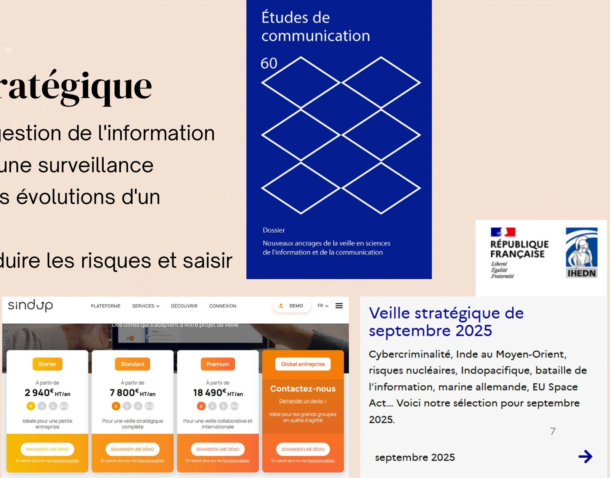
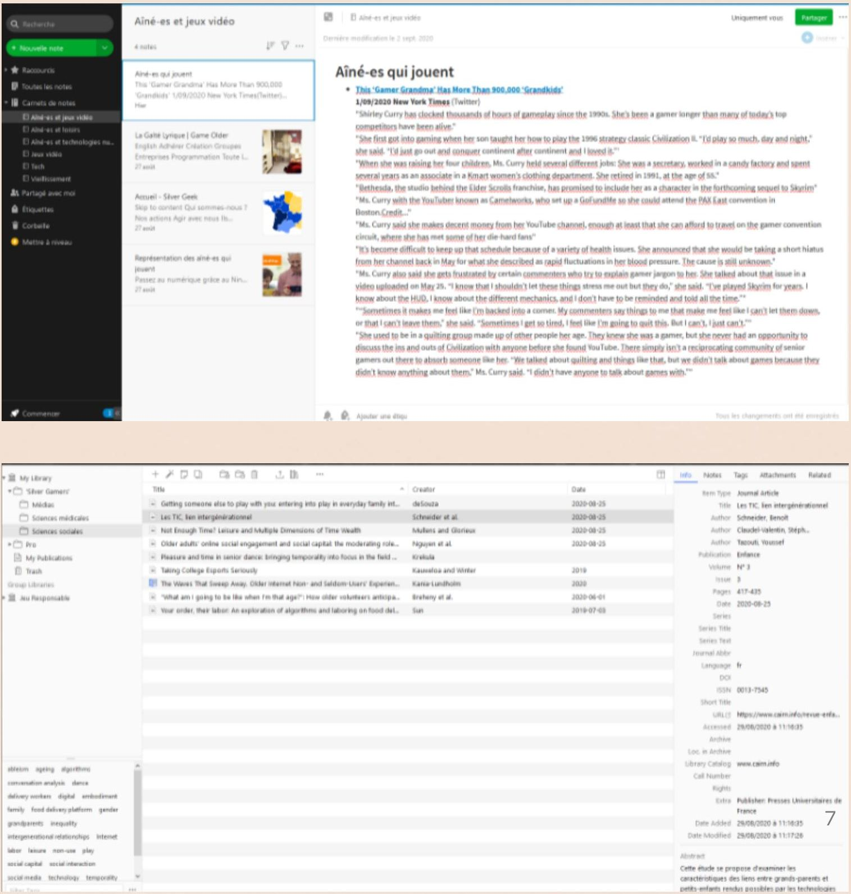
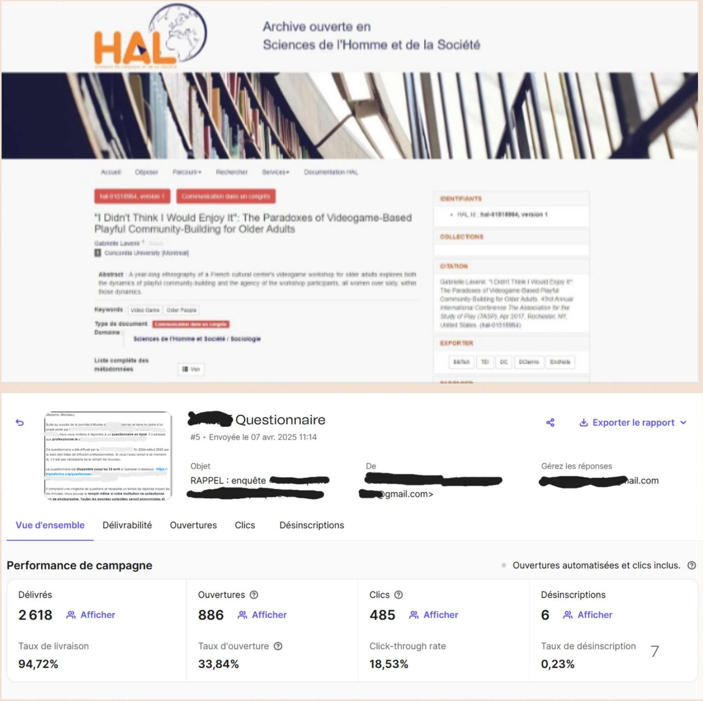
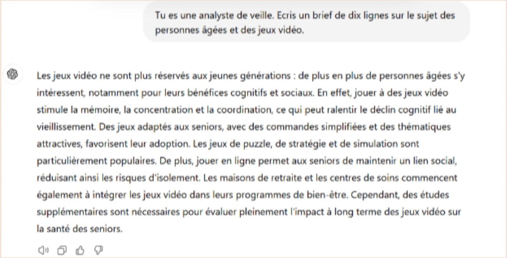
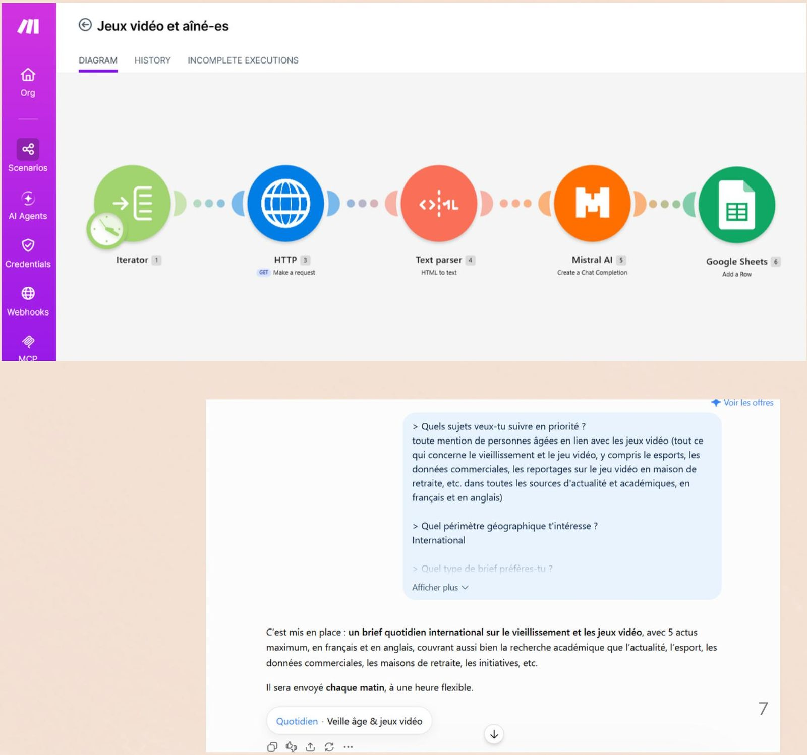
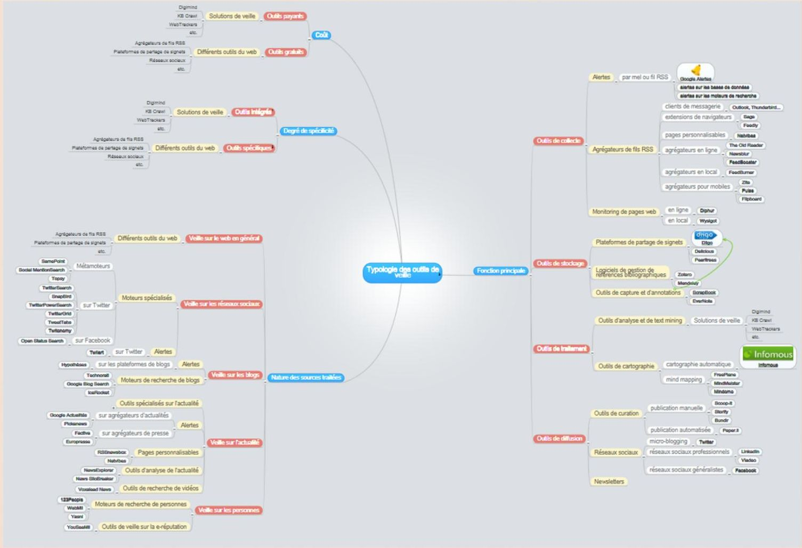
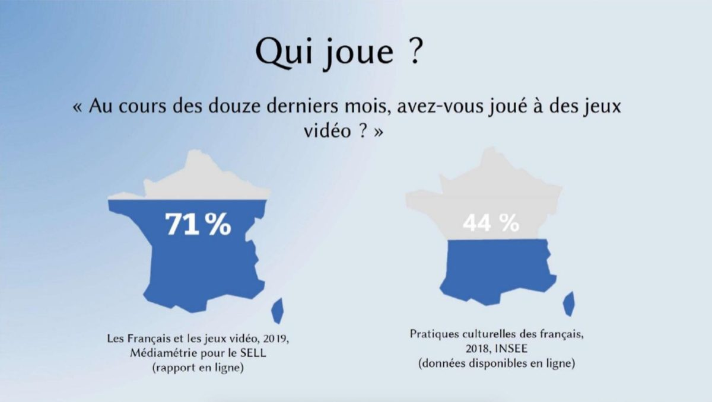

Informations en ligne, veille stratégique et médiatique
Apprendre à collecter, analyser et exploiter l'information pour une entreprise, une démarche d'intelligence économique ou sa propre recherche d'emploi.
Séances 1 à 6 · du 2 octobre au 13 novembre 20267 séances de 3 hPlan de veille · 4/11 · 10 ptsDossier de veille · 21/12 (1/12 à confirmer) · 10 ptsQuiz de 84 questions
Infos pratiques
Mes rendus individuels : deux rendus, 10 points chacun
Le plan de veille prépare le dossier : le premier montre que vous savez collecter et analyser, le second que vous maîtrisez toutes les étapes de la veille.
Ce que tu dois rendre, toi (point au 13 novembre)
Plan de veille individuel, 10 pts : rendu ✓
Dossier de veille métier et stratégie de carrière, 10 pts, PDF sur Upedago pour le lundi 21 décembre, dernier délai. Secteur choisi : la communication dans le sport automobile.
À éclaircir : la « synthèse analytique » du 20/11 (calendrier, séance 7), et le dossier du 1/12 annoncé en séance 1, peut-être le même travail que celui du 21/12.
Les diapos des séances 2, 3, 5 et 6 n'ajoutent ni date ni barème. Celles des séances 2 et 3 datent de l'an dernier (2025-2026) : leur structure de dossier est remplacée par la fiche du 16 octobre. Les envois « par mail » de la séance 2 concernaient l'atelier de groupe.
Évaluation 1 · individuel
Plan de veille
4 nov.10 pts
532
5 ptsle plan de veille
3 ptsl'analyse
2 ptsles éléments actionnables
Évaluation 2 · individuel · avec l'orientation pro
Dossier de veille métier
21 déc.10 pts
1 · 2,52 · 2,53 · 2,54 · 2,5
PDF sur Upedagolundi 21 décembre, dernier délai
1er déc.date annoncée en séance 1, à confirmer
2,5 ptspar étape de la veille (barème annoncé en séance 1)
Besoins · collecte · traitement · diffusion (voir les étapes)
Évaluation 1 · 4 novembre · 10 pts
Le plan de veille
Objectif : démontrer la maîtrise de l'étape de la collecte d'information et de l'analyse.
Critère
Attendu
Format
Individuel, 4 à 5 pages
Sujet
Un métier ou un secteur pro qui vous intéresse
Contenu
Axes, outils, sources, type d'information et de collecte
Références
2 références scientifiques en SHS
Conclusion
1 à 2 pages : analyse des résultats et éléments actionnables pour un plan de carrière ou une recherche d'emploi
Bon à savoir
La conclusion pèse 5 points sur 10 (3 pts d'analyse, 2 pts d'éléments actionnables). Choisir un secteur qui vous concerne vraiment rend ces recommandations plus faciles à écrire.
Évaluation 2 · lundi 21 décembre · 10 pts
Le dossier de veille métier et stratégie de carrière
Mettre en pratique la recherche documentaire, la veille stratégique et la synthèse analytique au service de votre insertion professionnelle.
Un travail commun avec le cours d'Orientation professionnelle (Marion Coville et Gabrielle Lavenir). Le sujet est un secteur ou métier de la communication que vous choisissez.
Rendu
Un PDF déposé sur Upedago, pour le lundi 21 décembre, dernier délai. La diapo de la séance 1 annonçait un dossier de veille pour le 1er décembre : il s'agit peut-être du même travail. À confirmer avec la prof, en attendant garde les deux dates en tête.
Les 3 étapes
Connaissance du secteur, des acteurs et de l'emploiPartie I.1. Principaux acteurs (entreprises, institutions, instances de régulation, associations pro, syndicats, presse sectorielle) et enjeux qu'ils identifient. Sources précises, avec leur statut et leurs méthodes.
Mise en place d'une stratégie de veilleParties I.2 et I.3. Une problématique de veille pertinente pour un futur pro, puis l'analyse des données : tendances, résultats, implications pour votre recherche d'emploi.
Élaboration d'une stratégie de carrièrePartie II. Un texte en quatre parties, à partir des analyses : représentations, compétences, recherche de stage et d'alternance, CV.
Étape 2 en détail
Élaboration d'une stratégie de veille (I.2) : quelle problématique ? Quels types d'information, sources, méthodes, outils ? Quelles requêtes et mots-clés ? On attend un plan de veille rédigé (modèle vu en cours) et la justification de vos choix.
Analyse des données (I.3) : tendances, principaux résultats, implications pour la recherche d'emploi (compétences à valoriser, sujets à maîtriser, domaines porteurs, controverses en cours). On attend plusieurs axes d'analyse et des recommandations concrètes, appuyées sur au moins 5 références identifiées pendant la veille.
Étape 3 en détail
Partie
Questions à traiter
Mes représentations vs la réalité
Quelles idées aviez-vous du secteur et des métiers de la communication ? Comment l'analyse les modifie-t-elle ? Que retenez-vous ?
Bilan sur mes compétences
À partir du bilan de compétences d'Orientation pro : quelles compétences mettre en avant, quelles lacunes combler en priorité ?
Stratégie de stage et d'alternance
Comment mobiliser les mots-clés, missions, acteurs et plateformes repérés dans les offres et les tendances ?
Adaptation de mon CV
Comment « rebrander » votre CV pour le secteur ? Un texte qui décrit la stratégie, avec votre CV modifié.
Sources minimales
Offres d'emploi10 offres en CDD ou CDI
Étude de marché1 source
Organisations pro2 sources
Presse pro sectorielle2 sources
Presse pro communication2 sources
Revue scientifique1 article publié après 2024
Structure du rendu final
Partie
Contenu
Courte introduction
D'où vous venez, vos expériences, quel secteur vous intéresse et pourquoi
I. Connaissance et analyse du marché du travail
1. Résultats principaux de la recherche documentaire 2. Élaboration d'une stratégie de veille 3. Analyse des données
II. Élaboration d'une stratégie de carrière
1. Mes représentations versus la réalité 2. Bilan sur mes compétences 3. Ma stratégie de recherche de stage et d'alternance 4. Adaptation de mon CV au secteur
Annexes
1. Bibliographie des sources de la recherche documentaire 2. Plan de veille 3. Tableau du corpus de veille
Le plan de veille rendu en novembre sert donc de base à la partie I.2 et figure en annexe 2.
La diapo de la séance 1 annonçait aussi 15 à 20 pages, une présentation professionnelle et 2,5 pts par étape de la veille. La fiche ne reprend pas ces points : à confirmer s'ils restent valables.
Où trouver des ressources ?
Type
Ressources citées
Marché de l'emploi
APEC : Prévisions de recrutements de cadres 2026, Pratiques de recrutement de cadres 2026, Cadres et management : une relation paradoxale, Les cadres et l'IA 2026, Perspectives sur les pratiques de recrutement de cadres en 2035, Les métiers cadres porteurs (édition 2026). OIT : Cartographie des besoins en compétences des pays européens dans le secteur des TIC, Observatoire sur l'IA et le travail dans l'économie numérique, Apprentissage permanent et compétences pour l'avenir, Tendances sociales et de l'emploi 2026 (enquête mondiale).
Études de marché
Xerfi, Euromonitor, Mintel. Kantar et Ipsos pour les baromètres. Enjeu : situer les acteurs (qui domine, qui émerge, segments en croissance) et comprendre les enjeux économiques auxquels la communication doit répondre.
Organisations pro
Fédérations, syndicats, observatoires de branche : FEBEA, Cosmetic Valley (cosmétique), Union Sport & Cycle, Sporsora (sport), Le Mouvement associatif, France Générosités (ONG), Leem, France Biotech (santé), Union française des métiers de l'événement. Leurs rapports annuels et listes d'adhérents aident à cartographier.
Presse pro sectorielle
Beauté : Premium Beauty News, CosmeticOBS, Glossy. Santé : Hospimedia, Le Quotidien du Médecin, La Veille Acteurs de Santé. Sport : Sport Stratégies, Sport Buzz Business. ONG : Carenews, Associations Mode d'Emploi, le Journal des Acteurs Sociaux.
Presse pro communication et marketing
En français : Stratégies, CB News, Influencia, The Media Leader, E-marketing, BDM (Le Blog du Modérateur), le blog du marketing d'influence (Kolsquare), L'ADN. À l'international : Social Media Today, Search Engine Land, Marketing Brew, Tubefilter (économie des créateurs), Platformer (newsletter sur les plateformes).
Introduction
À quoi sert ce cours ?
Maîtriser les enjeux, les méthodes et les outils de la veille stratégique.
Articuler les savoirs pro et une réflexion nourrie par les sciences sociales.
Pour quoi faire : un travail de veille en entreprise, une démarche d'intelligence économique, une recherche d'emploi.
Pour bien commencer, la prof fixe trois repères : un angle (la communication des organisations), une approche critique (mobiliser les sciences sociales) et une ambition : dépasser les platitudes et les fausses évidences.
Notion clé
Qu'est-ce que la veille stratégique ?
Une activité de gestion de l'information, sous la forme d'une surveillance, pour anticiper les évolutions d'un environnement, de manière à réduire les risques et saisir les opportunités.
Élément
Ce qu'il dit de la veille
Nature
Une activité de gestion de l'information
Forme
Une surveillance
But
Anticiper les évolutions d'un environnement
Finalité
Réduire les risques et saisir les opportunités
Trois visages de la veille
Un objet de recherche : la revue Études de communication n° 60 consacre un dossier aux « Nouveaux ancrages de la veille en sciences de l'information et de la communication ».
Un marché : Sindup, logiciel de veille présenté en séance 1, vend ses offres de 2 940 € HT/an (Starter) à 18 490 € HT/an (Premium), sur devis pour les grands groupes.
Une pratique institutionnelle : l'IHEDN publie une « Veille stratégique » mensuelle. En septembre 2025 : cybercriminalité, Inde au Moyen-Orient, risques nucléaires, Indopacifique, bataille de l'information, marine allemande, EU Space Act.

Diapo 12. La veille comme champ de recherche (Études de communication n° 60), comme produit commercial (tarifs Sindup) et comme publication d'État (IHEDN).
Notions clés
Signaux faibles et types de veille
Les signaux faibles · Ansoff (1975)
Certains indicateurs permettent d'anticiper des évènements à fort impact : l'enjeu est de réagir assez tôt pour éviter l'évènement, le minimiser, voire l'exploiter.
Limite théorique : un concept peu opératoire. Comment savoir d'avance quels signaux faibles annoncent vraiment quelque chose ?
Limite éthique : le recours aux algorithmes prédictifs.
En pratique : on s'appuie sur l'intuition, l'intelligence collective et l'expertise localisée.
Schéma. L'idée d'Ansoff : un évènement à fort impact s'annonce d'abord par des indices discrets. Le repérer tôt laisse le temps de réagir. Toute la difficulté (la « limite théorique ») est de savoir, au moment où on le voit, si ce point vert annonce vraiment quelque chose.
Les types de veille
Concurrentielleles concurrents
Commercialeclients, fournisseurs, marchés
Technologiqueinnovations, brevets
Légalelois et réglementations
Marketingtendances, consommateurs
E-réputationl'image en ligne
Les descriptions courtes sous chaque type sont ajoutées pour mémoriser, la diapo ne donne que les noms.
Schéma. La veille stratégique ne s'ajoute pas aux six autres : elle les relie et les met au service des décisions de l'organisation.
À retenir
La veille stratégique est une méta-veille : elle englobe et articule toutes les autres.
Méthode
Les 4 étapes de la veille
La veille est un cycle : on part d'un besoin, on collecte, on traite, puis on diffuse le résultat à ceux qui l'ont commandé.
Schéma. La veille tourne en boucle : ce que la diffusion apprend au commanditaire fait naître de nouveaux besoins. Chaque étape vaut 2,5 pts dans le dossier (barème de la séance 1).
2,5 ptsIdentification des besoinsQui passe commande ? Dans quel but ? Quelle question de recherche ?
2,5 ptsCollecte des informationsQuelles sources ? Comment organiser les informations ?
2,5 ptsTraitement des informationsComment analyser les informations ?
2,5 ptsDiffusionComment faire connaître le résultat de la veille ? Sur quels supports, à quelle fréquence ?
Lien avec les évaluations
Plan de veille (4/11) : il porte surtout sur les étapes 1 à 3. Les besoins donnent les axes, la collecte les outils et les sources, le traitement l'analyse de la conclusion.
Dossier de veille (21/12, 1/12 à confirmer) : les 4 étapes, à 2,5 pts chacune selon la séance 1. La partie I.1 (acteurs, sources) prépare la collecte, la partie I.2 formalise le plan de veille, la partie I.3 relève du traitement, et le PDF rendu de la diffusion.
Ce rapprochement est déduit des diapos, la prof ne l'a pas écrit ainsi.
Démonstration
Les 4 étapes, outil par outil
La prof déroule le cycle sur son propre sujet : les jeux vidéo et les aîné·es. Question : dans quelle mesure le rapport des gens âgés avec les jeux vidéo est-il en train de changer ?
Axe
Ce qu'on surveille
Social
Les pratiques vidéoludiques des gens âgés
Commercial
La promotion des jeux vidéo auprès des gens âgés
Médiatique
La représentation de la vieillesse dans les jeux vidéo
1 · Identification des besoins
Type de veille : scientifique et médiatique. Commanditaire : individuel, dans le cadre d'un projet de recherche.
Besoins : rassembler des données pour tester une question de recherche, identifier des tendances nouvelles.
Diapo 23. À gauche, Inoreader regroupe des flux Google Actualités construits avec des requêtes booléennes ("serious game" AND "jeu vidéo"). À droite, une alerte Google Scholar sur « serious game » pour suivre les nouvelles publications.
3 · Traitement des informations
Prise de notesEvernote, Notion
BibliographieZotero
RédactionScrivener

Diapo 24. En haut, un carnet de notes « Aîné-es et jeux vidéo » avec les extraits clés d'un article. En bas, une bibliothèque Zotero « Silver Gamers » rangée par disciplines (médias, sciences médicales, sciences sociales).
4 · Diffusion
CommanditaireSes propres plateformes
Archive ouverteHAL-SHS
Blog académiquehypotheses.org
PrésentationPrezi, Canva
NewslettersBrevo

Diapo 25. Une communication déposée sur HAL-SHS, puis une campagne Brevo et ses indicateurs : 2 618 mails délivrés, 33,84 % d'ouverture, 18,53 % de clics. La diffusion se mesure.
Atelier
Faire mieux que ChatGPT
Une IA générative produit du texte plausible, pas de la veille. La veille, ce sont des méthodes, des sources et un traitement critique de l'information.
IAG et LLM sont des modèles statistiques, des « perroquets stochastiques » sujets aux hallucinations.
Exercice : lister 5 à 7 idées de sens commun sur « les écrans », puis demander à un chatbot : « Tu es un·e analyste de veille. Écris un brief de dix lignes sur le rôle des écrans dans la société ». Comparer. Refaire l'exercice en groupe sur le sujet du dossier.

Diapo 19. Le brief produit par ChatGPT sur les personnes âgées et les jeux vidéo. Verdict de la prof : un joli texte de fiction, un échantillon de stéréotypes, de la très mauvaise veille. Aucune source, que des généralités.
Et l'IAG dans les outils de veille ?
Des outils qui s'imposent, dans la logique de l'automatisation de la surveillance.
On est passé de l'IA à l'IAG dans la veille, avec des conséquences écologiques et éthiques.
Flux automatisés : Make, Zapier, tâches planifiées par les chatbots.

Diapo 26. En haut, un scénario Make qui récupère des pages web, en extrait le texte, le fait résumer par Mistral AI et range le résultat dans Google Sheets. En bas, un chatbot programmé pour envoyer chaque matin un brief international sur le vieillissement et les jeux vidéo.
Organisation
Le calendrier des 7 séances
Séances de 3 h : 1h30 de cours, 1 h d'atelier, 30 min de conclusion, avec des démonstrations d'outils pro. Diapos disponibles après chaque séance.
Séance
Thème
Atelier
1 · 2 oct. 9h-12h
Introduction, présentation du logiciel Sindup
Usages de l'IAG en veille
2 · 5 oct. 13h45-16h45
Mise en place d'un plan de veille : besoins, problématique, méthode, outils
Problématisation et choix des outils pour le dossier
3 · 16 oct. 9h-12h
La recherche d'information : digital methods, automatisation de la collecte, mots-clés et opérateurs booléens, veille au-delà d'Internet
Lancement du travail collectif sur les dossiers, questions Sindup
4 · 2 nov. 9h-12h
Premier rendu : plan de veille. La veille en organisation (entreprise, institution, collectif), enjeux politiques et sociaux
Optimisation des mots-clés, en groupe
5 · 9 nov. 13h45-16h45
Intervention Curebot. Sélection et validation des sources, sources scientifiques, citer une source, plagiat
Sources du dossier
6 · 13 nov. 13h45-16h45
L'analyse des informations : données en entreprise, méthodes des sciences sociales, statistiques
Analyse d'un réseau d'acteurs
7 · 20 nov. 13h45-16h45
Deuxième rendu : synthèse analytique. La diffusion, focus veille scientifique, outils pour le mémoire
Travail individuel sur un article scientifique
Frise. Les séances (ronds) et les rendus (losanges). Losange plein : date sûre. Losange vide et trait pointillé : date annoncée par une diapo, à faire confirmer.
Dates à faire confirmer
Le calendrier ne colle pas avec la diapo des évaluations. Il place le plan de veille le 2 novembre (séance 4), pas le 4. Il annonce aussi une « synthèse analytique » le 20 novembre. La fiche du dossier fixe son rendu au lundi 21 décembre, alors que la diapo des évaluations disait le 1er décembre.
Ressource
Pour aller plus loin
« Démarche et outils pour développer une veille numérique personnelle », URFIST Rennes : urfist.univ-rennes2.fr

Diapo 27. Carte mentale de l'URFIST : les outils de veille classés par coût (gratuits ou payants), par nature des sources (web, réseaux sociaux, blogs, actualité, personnes) et par fonction (collecte, stockage, traitement, diffusion). Les 4 fonctions recoupent les 4 étapes de la veille.Séance 2 · 5 octobre
La mise en place de la veille
Tes notes, complétées par les diapos de la séance (PDF reçu le 9 novembre).
fournir des informations avérées pour assister la prise de décision ;
assurer un avantage stratégique.
Conséquence
Il faut détecter les signaux faiblesen se rapprochant de leur source.
1.1 Un peu d'histoire
Repère
Ce qu'il faut retenir
Filiation
La veille prolonge le renseignement et l'intelligence économique
Différence
Elle s'appuie sur des sources ouvertes et vise un objectif d'information
Vision du monde
Un environnement marqué par l'instabilité et le risque d'excès d'information
Ressource citée : vie-publique.fr, « Intelligence économique et stratégie des entreprises ».
Sources ouvertes, sources fermées
Une distinction héritée du renseignement : les sources ouvertes sont accessibles à tous, les sources fermées réservées (accès restreint, confidentiel). Les diapos classent aussi l'information selon son degré d'accessibilité :
Information blanchePublique, librement accessible
Information griseAccessible, mais difficile à trouver ou à obtenir
Information noireConfidentielle, protégée, hors du champ de la veille
Schéma. Comme un iceberg : la part visible (blanche) est la plus petite. La valeur ajoutée du veilleur se joue souvent dans l'information grise, rapports, littérature pro, archives. La noire relève de l'espionnage, pas de la veille.
Les définitions courtes sont la lecture usuelle de ces catégories, la diapo ne donne que les termes.
Sindup, une plateforme intégrée
Après la vidéo de présentation, deux questions à se poser :
Comment Sindup cherche-t-il à se distinguer de ses concurrents ? Quelle est son USP (Unique Selling Proposition) ?
Pourquoi Sindup met-il sa plateforme gratuitement à votre disposition ?
Quelle place Sindup donne-t-il à l'IA et à l'IA générative ? (question ajoutée sur les diapos)
La présentation de Sindup qui a suivi donne des éléments de réponse :
ClientsPetites et grandes entreprises privées, une multiplicité d'usages et de marchés
CollecteRécupération des contenus garantie conforme
AnalyseHumain + IA : on valide, supprime ou commente chaque article remonté
DiffusionNewsletters, alertes, bibliothèque consultable, envoi vers Teams, Slack ou un CRM
AccompagnementService client inclus (chat, mail) et communauté de clients
SécuritéIA générative intégrée, accès par SSO, environnement sécurisé
Réponses possibles aux deux questions
USP : une plateforme intégrée qui couvre tout le cycle de la veille, de la collecte conforme à la diffusion dans les outils internes, avec un accompagnement humain inclus. Ce n'est pas un logiciel vendu seul.
Gratuité : non expliquée dans la présentation. Hypothèse : former et fidéliser de futurs professionnels, et nourrir la communauté d'usages que Sindup met en avant.
IA : un rôle d'assistant. L'IA trie et résume, mais l'humain garde la main : il valide, supprime ou commente ce qui remonte.
Tes notes viennent d'une dictée automatique très déformée. Ce résumé reconstitue le sens probable. Restent incertains : l'hébergement en France, d'éventuels accords avec les éditeurs, et un exemple sur un article de l'Université d'Ottawa.
1.2 Les 4 étapes en détail
Étape
Ce qu'on fait
Ce que ça produit
1. Identification des besoins
Cerner les utilisateurs, leurs besoins, le périmètre, les moyens, la finalité, les types de données
Entrevue de veille, plan de veille, problématique et axes
2. Collecte
Identifier les sources, collecter de façon ponctuelle et automatique, stocker et classer
Outils de collecte automatique, base de données
3. Traitement
Contextualiser, mettre en lien, interpréter, proposer une analyse
Analyse, outils de visualisation
4. Diffusion
Choisir le format et le mode (ponctuel ou automatisé), diffuser les livrables, définir les niveaux d'accès
Une veille est inutile si elle ne répond pas au but fixé.
La problématique définit la méthode, les sources, le calendrier et la diffusion.
Il faut donc identifier les besoins avant de chercher quoi que ce soit.
L'entrevue de veille
Un échange avec les commanditaires pour cerner :
ObjectifsLes objectifs stratégiques
CommanditairesQui commande, pour qui
ExistantLes pratiques de veille déjà en place
ManquesLes informations qui font défaut
RessourcesLe temps, le budget, les outils
Le plan de veille qui en sort est ensuite validé avec les commanditaires.
Formuler une problématique
Sur un même thème (les jeux vidéo), la problématique change selon le commanditaire : un petit éditeur, une association professionnelle ou une institution régionale n'ont pas les mêmes besoins, donc pas les mêmes axes.
Plutôt que…
Essayez
Les soins médicaux
La place de l'innovation dans le soin
L'agriculture
Les stratégies de l'élevage bovin face à la crise écologique
La voiture autonome
Le positionnement des acteurs de la voiture autonome
Les réseaux sociaux menacent le lien social
Quelles sociabilités les réseaux sociaux favorisent-ils ?
Schéma. On entre large (un thème), on ressort étroit (une question que la veille peut traiter). C'est la problématique qui dira ensuite quelles sources, quels outils et quel calendrier choisir.
La règle
Un thème n'est pas une problématique. On resserre sur une question, et on évite les affirmations toutes faites : on demande « quelles sociabilités ? » au lieu de poser que les réseaux « menacent » le lien social.
La méthode fait la réponse

Séance 2, « Qui joue ? ». Même question (« Au cours des douze derniers mois, avez-vous joué à des jeux vidéo ? »), deux résultats : 71 % pour Médiamétrie et le SELL, le syndicat des éditeurs (2019), 44 % pour l'enquête Pratiques culturelles (2018). L'écart vient de la méthode : questionnaire en ligne d'un côté, enquête en face à face de l'autre, et un commanditaire qui a intérêt à un chiffre élevé.
La diapo indique « INSEE » pour l'enquête Pratiques culturelles, habituellement menée par le ministère de la Culture.
Atelier et conclusion
Atelier en groupe : définir le commanditaire, la problématique et les axes, choisir les outils et faire de premiers tests (à envoyer à la prof par mail), préparer une question par groupe pour Sindup.
Conclusion : la question posée et les outils choisis déterminent la réponse obtenue.
Quelles références théoriques ?
Revue internationale d'intelligence économique
Revue des Sciences de Gestion
Sociologie du travail
Titres confirmés par les diapos.
Utile pour le plan de veille, qui demande 2 références scientifiques en SHS.
Séance 3 · 16 octobre
La recherche d'information : digital methods et mots-clés
Tes notes, complétées par les diapos de la séance (PDF reçu le 9 novembre).
Les digital methods
La rencontre entre les objets numériques, en particulier le web, et les méthodes des sciences sociales : le numérique devient à la fois objet d'étude et outil de recherche.
Ce n'est pas une simple adaptation technique : les digital methods interrogent ce que le numérique fait aux sciences sociales.
Approche
Principe
Exemples
1. Méthodes classiques, nouveaux objets
Traduire les méthodes des sciences sociales pour étudier des objets numériques. Pour étudier les mondes numériques, il faut y entrer.
Entretiens sur IRC, observation d'une partie de poker en ligne, ethnographie en ligne
2. Méthodes natives du web
Développer des méthodes en détournant des outils numériques
Outils du médialab de Sciences Po, Search Engine Scraper de la Digital Methods Initiative, le web crawler open source Scrapy
Exemple d'étude citée : la Digital City d'Amsterdam (Oudshoorn et al., 2004), sur la façon dont un service en ligne inscrit une image de ses utilisateurs.
Les Science & Technology Studies (STS)
Les technologies et les usages se font mutuellement.
Les technologies portent des représentations, qu'elles renforcent en encourageant certains usagers et en en excluant d'autres. Exemple : les ponts de Robert Moses à New York, conçus trop bas pour laisser passer les bus.
Les usagers gardent une marge de manœuvre : les machinimas, des films tournés en détournant le moteur d'un jeu vidéo.
Les ponts de Robert Moses sont confirmés par les diapos. Le détail des bus et la définition des machinimas sont des compléments.
Dessin. L'exemple des STS : une décision technique (la hauteur d'un pont) trie les usagers. Les automobilistes passent, les bus, et donc les gens qui n'ont pas de voiture, restent à l'écart. L'objet technique n'est pas neutre.
Les mots-clés : aller plus loin que Google
Accès limitéUne portion seulement du web
OpacitéDes biais et des mécanismes opaques
Signaux faiblesPar définition, peu de signaux faibles
HégémonieÀ remettre en cause : préférer les sources spécialisées
Google Alerts, Google Scholar Alerts, listes de diffusion, newsletters, Distill
Pull
Vous allez chercher l'information
Agrégateur de flux (Inoreader), moteurs et bases de données
Puis on range : Evernote pour les notes, Zotero pour les références.
Le classement des outils entre push et pull est déduit, la diapo les liste ensemble.
Schéma. En push, on configure une fois et les nouveautés arrivent seules. En pull, chaque recherche est une démarche active. Une bonne veille combine les deux.
Les opérateurs de recherche
Opérateur
Effet
x AND y
Les deux termes
x OR y
L'un ou l'autre
x NOT y · -y
Exclut un terme
(x OR y) AND z
Combine des conditions
"x y"
Expression exacte
+x
Terme obligatoire
psy*
Troncature : psychologie, psychique…
2000..2020
Intervalle de nombres ou de dates
site: · inurl:
Limite à un site, ou à un mot dans l'adresse
allintitle: · title:
Termes dans le titre
filetype:pdf
Type de fichier
author: · date:
Auteur ou date (bases et Google Scholar)
Schéma. La zone verte, c'est ce que la requête renvoie. AND resserre, OR élargit, NOT retire le bruit. On les combine avec des parenthèses : "sport automobile" AND (sponsoring OR partenariat).
Exemple : "sport automobile" AND (sponsoring OR partenariat) site:sportstrategies.com
La veille avant le Web
Internet n'est pas tout : la plus-value vient souvent de ce qu'on trouve hors ligne. Les méthodes des sciences sociales (entretiens, observation), les collègues, le réseau de contacts et les sources informelles en font partie.
À retenir
Automatiser la collecte pour surveiller sans y passer ses journées.
Aller chercher des sources au-delà d'Internet.
Séance 5 · 9 novembre
Sélectionner et valider ses sources
D'après les diapos de la séance (PDF reçu le 9 novembre).
Une bonne veille ne se mesure pas au nombre de sources : on cherche des sources pertinentes et valides, on les vérifie, et on les cite correctement.
1 · La pertinence
Combien de sources ? Pas de chiffre magique : on s'arrête à la saturation, quand de nouvelles sources n'apportent plus rien.
Sources primaires (les données d'origine : un rapport, une enquête, un entretien) et sources secondaires (qui commentent ou reprennent les premières).
Exemple de la photographie : distinguer les sources qui renseignent vraiment sur le sujet du bruit (pages promotionnelles, contenus recopiés).
Schéma. Les premières sources apprennent beaucoup, les suivantes répètent. Quand une nouvelle source n'ajoute presque plus rien, on a atteint la saturation. Les valeurs sont illustratives.
2 · La validité
Toute source est située : qui parle, d'où, pour qui ?
Elle a des biais, qu'il faut identifier plutôt qu'ignorer (voir l'exemple « Qui joue ? »).
On se demande à quels interlocuteurs elle s'adresse.
3 · Vérifier concrètement
Schéma. Plus on s'éloigne de la source primaire, plus le risque de déformation grandit. Dans le dossier, on cite le rapport lui-même, pas l'article qui en parle. Le troisième maillon est un exemple ajouté.
DonnéesSont-elles référencées ?
CroisementD'autres sources disent-elles la même chose ?
OrigineRemonter aux sources primaires
AuteurQui est-il, quelle légitimité ?
PublicationOù, quand, par quel éditeur ?
LiensLiens institutionnels ou commerciaux
Guides cités : ceux des bibliothèques de l'UQAC et de l'UQAM sur l'évaluation des sources.
Certaines sources sont à éviter selon le contexte : ce qui passe pour une veille rapide ne se cite pas forcément dans un mémoire.
En bref
Être prudent et méfiant, et clair sur les biais de chaque source.
Exclure les sources peu fiables, mais rester attentif aux signaux faibles qu'elles peuvent porter.
4 · Les sources scientifiques
MoteurGoogle Scholar
BasesCelles de l'université
RevuesPersée, OpenEdition
RebondsLes bibliographies des articles lus
Utile pour les 2 références SHS du plan de veille et l'article scientifique publié après 2024 du dossier.
Atelier
Remplir un tableau de sources partagé (Framacalc) pour le dossier.
Quiz : « peut-on citer cette source dans un mémoire ? »
5 · Citer sans plagier
Pratique
Ce que c'est
Citation
Reprendre les mots exacts de l'auteur, entre guillemets, avec la référence
Paraphrase
Reformuler l'idée avec ses propres mots, en citant quand même la source
Plagiat
Reprendre des mots ou des idées sans dire d'où ils viennent, même reformulés
Exemple travaillé en cours à partir d'un texte de Dominique Pasquier (2017).
Un format de citation, et un seul, tenu sur tout le document.
Une référence courte dans le texte et la référence complète en bibliographie.
Ressources citées : guides de Sciences Po, de l'UCO et de l'UQAM.
Séance 6 · 13 novembre
L'analyse des informations
D'après les diapos de la séance (PDF reçu le 13 novembre).
Collecter ne suffit pas : la veille vaut par ce qu'elle rend lisible. Analyser, c'est trier, relier, structurer, résumer, monter en généralité et dégager des tendances, avec rigueur.
1 · L'analyse des données
L'enjeu de la veille : rendre accessibles des informations à forte valeur stratégique.
Ne pas dépenser tout son temps et son énergie sur la récolte : l'analyse a besoin de temps.
Rendre l'information lisible : trier, faire des liens, structurer, résumer, monter en généralité, identifier des tendances.
L'analyse se fait en fonction du public : on revient au diagnostic de la première étape.
Par où commencer ?
Relire la problématiqueGarder en tête la question fixée au début de la veille.
ChercherLes sujets récurrents, les acteurs importants et leurs relations, les conflits et les échecs, les relations de pouvoir.
ContextualiserSituer chaque acteur et chaque évènement dans un contexte, un réseau, une histoire, en particulier économique.
2 · Une analyse rigoureuse : les 9 règles
Règle
Ce que ça veut dire
Exemple du cours
Comptez !
Compter de façon systématique dans le corpus (mentions d'un sujet, d'un acteur, d'un évènement), sans se fier à ses impressions
« Sur 563 articles de presse, X est mentionné 35 fois, ce qui en fait la tendance la plus citée », plutôt que « on voit se dégager une tendance X »
Gardez de la distance
Ne pas croire les acteurs sur parole, « chercher la petite bête », distinguer faits, récits et discours
« L'entreprise X revendique sa diversité […] ce qu'on ne peut pas vérifier faute d'accès aux chiffres », pas « l'entreprise X s'engage pour la diversité »
Mettez à l'épreuve
Chercher systématiquement à contredire une affirmation, même si on est d'accord, pour tester sa solidité
Un billet de blog dit que les gens sont de plus en plus dépendants aux réseaux sociaux : chercher les travaux sur cette notion, surtout critiques, et resituer le billet
Assurez vos arrières
Être précis, toujours fournir une source ou une donnée, contextualiser et historiciser
Dire « les pratiques culturelles numériques » ou « les loisirs en ligne », pas « le numérique ». Se méfier de « X n'a jamais été aussi important qu'aujourd'hui »
Écrivez avec prudence
Laisser de la place à l'incertitude, au doute, à la critique
Pas « la situation des artistes empire à cause du numérique », mais « certains outils numériques réorganisent la création, y compris en affectant négativement le revenu de certaines catégories d'artistes, surtout les plus précaires »
Ayez une approche réflexive
Tenir compte de sa propre position, de ses préconceptions et jugements de valeur
On n'efface pas ses opinions (impossible), et croiser des sources de bords opposés ne rend pas objectif : la vérité n'est pas à mi-chemin des extrêmes
Ayez une réflexion éthique
Dire clairement ce qu'on refuse d'utiliser comme source ou perspective. Diffuser un discours sans le contextualiser a des conséquences
Traiter certaines approches comme des données, sans forcément les citer directement
Ne généralisez pas abusivement
Internet, et surtout les réseaux sociaux, ne reflètent pas la société : ceux qui s'y expriment sont une minorité non représentative
Pas de raccourci entre un hashtag populaire et « ce que pensent les Français·es »
Lisez les statistiques
Identifier qui les a produites, le commanditaire, le contexte ; vérifier et critiquer la méthodologie ; préférer les sources qui donnent les données ; comparer les ordres de grandeur avec d'autres chiffres
Les statistiques ne sont pas plus « objectives » que les mots : elles se manipulent aussi facilement (voir « Qui joue ? »)
Pour le dossier
La partie I.3 (analyse des données) sera lue avec ces règles : chiffrer les tendances à partir du corpus, citer une source pour chaque affirmation, et écrire « l'acteur X revendique » plutôt que « l'acteur X fait ».
Ce lien avec le dossier est déduit, la diapo ne le dit pas.
Exercice : réécrire une phrase généraliste
Chaque groupe écrit 2 phrases généralistes sur son sujet (on peut reprendre celles produites par une IAG à la séance 1).
On retravaille la première ensemble, comme exemple.
On reprend la seconde morceau par morceau jusqu'à ce qu'elle ait sa place dans un dossier de veille.
3 · Atelier : reconstituer un réseau d'acteurs
À partir des données de ton dossier individuel :
Quels sont les acteurs du secteur ?
Quelles relations entre eux : alliance, concurrence, membres d'une même organisation… ?
Quels liens économiques et politiques : qui emploie qui, dépend de qui, subventionne qui, peut gêner qui ?
Sur quels acteurs a-t-on très peu d'information ?
Mettre le réseau en forme : dessin, logiciel ou outil de visualisation.
Schéma. Un réseau d'acteurs se lit comme une carte : des acteurs (boîtes) et des types de liens (appartenance, financement, emploi, concurrence). Le cadre en pointillés signale un acteur sur lequel on manque d'information, ce qui est en soi un résultat. Les acteurs sont des exemples génériques, à remplacer par ceux de ton secteur.
Révision
Glossaire
Veille stratégique
Activité de gestion de l'information, sous forme de surveillance, pour anticiper les évolutions d'un environnement, réduire les risques et saisir les opportunités.
Méta-veille
La veille stratégique englobe toutes les autres : concurrentielle, commerciale, technologique, légale, marketing, e-réputation.
Signaux faibles
Indices précoces d'évènements à fort impact (Ansoff, 1975). Concept utile mais peu opératoire.
Renseignement
Ancêtre de la veille. La veille s'en distingue par le recours aux sources ouvertes.
Intelligence économique
Démarche voisine dont la veille prolonge la logique, au service de la stratégie des entreprises.
Sources ouvertes / fermées
Ouvertes : informations publiques et licitement accessibles, base de la veille. Fermées : à accès restreint ou confidentiel.
Information blanche, grise, noire
Classement selon l'accessibilité : publique, difficile à obtenir, confidentielle.
Entrevue de veille
Échange avec les commanditaires pour cerner objectifs, pratiques existantes, manques et ressources.
Push / pull
Push : l'information vient à vous (alertes, newsletters). Pull : vous allez la chercher (agrégateur, moteur).
Saturation
Moment où de nouvelles sources n'apportent plus d'information nouvelle.
Source primaire / secondaire
Primaire : la donnée d'origine. Secondaire : un texte qui la commente ou la reprend.
Paraphrase
Reformulation d'une idée avec ses propres mots, qui doit quand même citer sa source.
Plagiat
Reprise de mots ou d'idées sans en indiquer l'origine.
Faits, récits, discours
Distinction à garder en analysant : ce qui s'est passé, ce qu'on en raconte, ce qu'un acteur dit de lui-même.
Réflexivité
Prendre en compte sa propre position et ses préconceptions dans l'analyse.
Réseau d'acteurs
Carte des acteurs d'un secteur et de leurs liens (alliance, concurrence, emploi, financement, dépendance).
Excès d'information
Risque propre à la veille : trop d'informations noie l'essentiel, d'où l'importance du tri et du classement.
Collecte ponctuelle / automatique
Recherche faite à la main à un moment donné, ou surveillance continue par des outils (alertes, flux RSS, agents).
Flux RSS
Fil d'actualités d'un site, regroupé dans un agrégateur comme Inoreader.
Agent de surveillance
Outil qui signale les changements d'une page web (WatchThatPage, Distill).
Digital methods
Rencontre entre objets numériques et méthodes des sciences sociales : le numérique comme objet et comme outil de recherche.
Méthodes natives du web
Méthodes construites en détournant des outils numériques (scrapers, crawlers).
Scraper
Outil qui extrait automatiquement des données d'une page, par exemple les résultats d'un moteur de recherche.
Web crawler
Robot qui parcourt le web de lien en lien pour en cartographier une partie.
STS
Science & Technology Studies : les technologies et les usages se façonnent mutuellement.
Machinima
Film réalisé en détournant un jeu vidéo : exemple de marge de manœuvre des usagers.
SSO
Single Sign-On : connexion unique avec les identifiants de l'entreprise, gage de sécurité.
CRM
Logiciel de gestion de la relation client, vers lequel une veille peut être diffusée.
USP
Unique Selling Proposition : ce qui distingue une offre de ses concurrentes.
Commanditaire
Celui qui passe commande de la veille et en définit les besoins.
Perroquet stochastique
Image critique des IA génératives : elles produisent du texte probable, sans compréhension ni sources.
À confirmer
Points à vérifier
Synthèse analytique du 20 novembre : est-ce un rendu à part, et lequel ?
Dossier : le dossier du 1er décembre (séance 1) et celui du 21 décembre (fiche) sont-ils le même travail ?
Dossier : les 15 à 20 pages et le barème de 2,5 pts par étape annoncés en séance 1 valent-ils encore ?
Les 4 étapes notées 2,5 pts sont-elles bien besoins, collecte, traitement, diffusion ?
Présentation Sindup : hébergement en France ? accords avec les éditeurs ? pourquoi la plateforme est-elle gratuite pour les étudiants ?